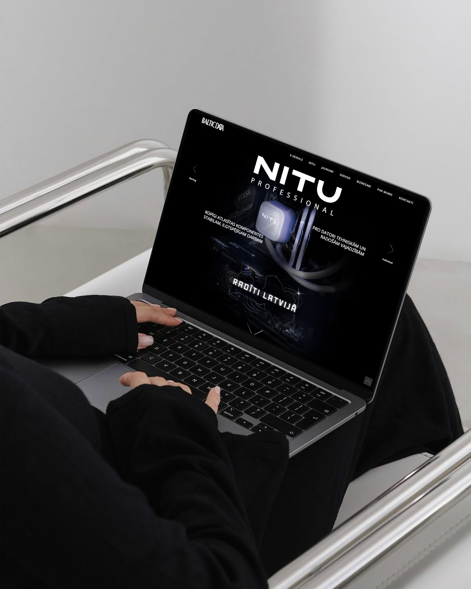

Laura Mendija Rozīte
Visual & Multidisciplinary Designer
I work across UI/UX, web, motion and visual communication, shaping systems that balance structure, clarity and atmosphere.
My background spans both digital environments and physical space — from exhibitions and installations to responsive interfaces and campaign systems. This has deeply influenced how I think about hierarchy, interaction and user flow.
I’m comfortable owning projects end-to-end: from concept and UX logic to visual execution, motion and final delivery. I value clarity, restraint and intention in both design and collaboration.
Digital & UX
- UI / UX design for web & mobile
- User flows, wireframes & prototyping
- Responsive & adaptive design
- Design systems & consistency
Visual Communication
- Graphic design & visual identities
- Typography & color theory
- Campaign concepts & art direction
- Print & digital layouts
Motion, Image & Space
- Motion graphics & animation
- Video editing & storytelling
- Photography & videography
- 3D modeling & animation
Figma
Photoshop
Illustrator
InDesign
After Effects
Premiere Pro
Blender
Unity
HTML / CSS
JavaScript (basic)